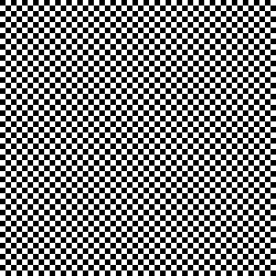

Permanent Pixels Deepdive
January 3rd, 2022
by Ben and Nico
What are Permanent Pixels?
Overview
Permanent Pixels are 50 “pixel” X 50 “pixel” images that are generated and stored 100% on chain on the Polygon network, in a truly random manner (using Chainlink VRF). Each image contains 2500 “pixels,” all of which have an equally likely chance to be black or white. There can be up to 10,000,000 (10 Million) Permanent Pixels created.
Image
Permanent Pixels are 50 X 50 grids of black and white squares; aka “pixels.” Each of the 2500 squares in the grid have an equally likely chance (50/50) of being either black or white.
50 X 50 grid of black and white pixels
Creation
Permanent Pixels will be created and held on the Polygon network and are generated completely on-chain and in a verifiably random manner.
The difference between off-chain and on-chain NFT's
Off-chain NFT's refer to NFT's that have some or all of their data stored outside of the blockchain. It is common practice to create all of the images and metadata for an NFT collection before it has actually launched, and then store that data in an off chain location, such as IPFS. When an NFT is minted, it will reference the off chain data but not actually create anything new. Two advantages of off chain NFT's are that they can be easier to create, and there are lower network fees required to mint them. One of the main disadvantages of off-chain NFT's is that their data is not permanently stored to the blockchain and could be deleted or edited in the future.
On-chain NFT's, on the other hand, have all of their data stored on the blockchain. On-chain NFT's can be difficult and expensive to create; Solidity (the coding language for smart contracts) and blockchains are not designed to create and store large amounts of image data. The advantage of having NFT data stored on the blockchain is that it cannot be edited or deleted like off-chain NFT's can; on-chain NFT's are permanent.
Why Permanent Pixels are on-chain and on the Polygon network
It was decided to make Permanent Pixels on-chain because of the trust and value that on-chain data provides: the data for Permanent Pixels will never get deleted or edited in the future.
The Polygon network was chosen for its low network fees. Minting Permanent Pixels will use a significant amount of gas, but the Polygon network keeps the monetary cost of minting low. There will be further discussion of cost and pricing later in the article.
What verifiably random means, and why it is important
One challenge Solidity and the blockchain faces is the creation of truly random numbers. Pseudo random numbers can be created, but with the right motivation, someone can figure out how the pseudo randomness works and easily determine which pseudo random numbers will be generated. If not for the use of truly random numbers, there are a few reasons this could cause problems for Permanent Pixels. The first reason this is a concern, is because the Permanent Pixels are all generated on-chain. If the Permanent Pixels were generated off-chain, there would be no need to worry about using blockchain resources to create random numbers as all of the work to create randomness would be done off-chain. The second reason is that randomness will be used to determine how rare a Permanent Pixel is: the random number generated as the seed for each NFT will be used to determine how rare it is. There will be an in depth discussion about how the Permanent Pixel rarity works later on in the article, but for now, the important thing to know is that the more rare an NFT is, the more valuable it is. If Permanent Pixels used pseudo random numbers when generating NFT's on the blockchain, someone could potentially figure out how the randomness works and then mint all of the most valuable NFTs for themselves, which would give the most technical savvy an unfair advantage over others.
In comes Chainlink VRF (Verifiable Random Function). Here is the description of Chainlink VRF from their website:
“Chainlink VRF enables smart contracts to access randomness without compromising on security or usability. With every new request for randomness, Chainlink VRF generates a random number and cryptographic proof of how that number was determined. The proof is published and verified on-chain before it can be used by any consuming applications. This process ensures that the results cannot be tampered with nor manipulated by anyone, including oracle operators, miners, users and even smart contract developers.”
Chainlink VRF eliminates the two problems described above by allowing for truly random and verified number generation on-chain. Each time a Permanent Pixel needs to be minted, a new random number is generated using Chainlink VRF that determines what it will look like.
How Permanent Pixels use random numbers to determine color expression, and reduce cost
Skip this section if you are not interested in technical details
As described in the previous section, a single random number is generated as the seed to create a Permanent Pixel. You may be wondering: how does a single random number determine how the 2500 different squares in a Permanent Pixel appear?
The initial number generated from the Chainlink VRF is a 32-byte random number.
Each bit in the base-2 representation of the 32-byte (256-bit) number represents a pixel in our Permanent Pixel, beginning from the top left, and continuing to the right.
Let's use the number 19…. as an example:
The binary representation of 19 in big-endian form is:
10011
Each bit is consumed from smallest to largest (right to left) until all 256 bits have been used.
In a Permanent Pixel, the first 5 columns of the first row would appear as follows (0 represents Black, 1 represents White):
White, White, Black, Black, White
If you are still reading this section of the article and have experience coding Solidity, you may have noticed a problem with this solution. It is only possible to request a number that is up to 256 bits long (uint256). There are 2500 'pixels' that need numbers to determine their color expression but only 256 to go around.
There are two possible ways to continue at their point, request more random numbers, or find a way to make the number longer. Requesting more random numbers would solve the problem, however ten different random numbers would need to be requested, and there is a fee associated with requesting random numbers, and so this method would make a Permanent Pixel 10x more expensive to produce.
We chose to use the second solution; make the number longer. Each time a random number is fully converted into a pixel representation (256 pixels), the number is hashed to a new 32-byte integer and used for further pixels.
How is Permanent Pixel rarity and metadata set up?
Overview
Permanent Pixels have two different rarity measures that are important to pay attention to. Visual Resemblance, which refers to how much the Permanent Pixel looks like something, and Mathematical Rarity, which refers to how mathematically likely it was for a Permanent Pixel to be randomly generated. Mathematical Rarity is included in the metadata but Visual Resemblance is not, as this measure is too subjective to quantify. In addition to Mathematical Rarity, the metadata will also include the name of the NFT (pulled from what number in the collection it is), the on-chain image data, and its skew, which describes if there are more black than white squares in the image, or an equal amount.
Mathematical Rarity
Mathematical Rarity refers to how far a minted NFT deviates from its expected configuration. For each of the 2500 squares in a Permanent pixel, there is an equally likely chance that they will be either black or white. Since we know that the black and white odds are equal, we can assume that the “typical” Permanent Pixel will have 1250 white and 1250 black squares. The mathematical rarity is calculated by taking the absolute value of the difference between the total number of black and white squares (|black — white|). The lowest score a Permanent Pixel can have is 0, and the highest score is 2500. Keep in mind that the difficulty of getting a high score does not increase on a linear scale but an exponential one, so even relatively low Mathematical Rarity scores can represent extreme rarity.

Visual Resemblance
Visual Resemblance refers to how recognizable an image is and the visual significance an image has. This can refer to pattern and object/picture representations. It is expected that the majority of the Permanent Pixels will not have Visual Resemblance. The Permanent Pixels that have Visual Resemblance will be extremely rare regardless of their Mathematical Rarity score.
Here in an example of a hypothetical Permanent Pixel with Visual Resemblance but a low rarity score. The image has 1250 black squares on the left side of the image and 1250 white squares on the right side of the image. The Mathematical Rarity score for this image would be 0, but the odds of generating such an image are catastrophically low, making it extremely rare. One good test of Visual Resemblance is if the appearance of the Permanent Pixel can easily be described.
Easter Egg
As discussed earlier in the randomness section of the article, there has been a significant effort made to ensure that each Permanent Pixel minted is completely random. As is the case with randomness, it is possible to generate the same number twice. While the odds are extremely unlikely, it is hypothetically possible to mint identical NFTs. The Permanent Pixels code does not check for or screen out duplicate NFT's to maintain pure randomness. Thethe random numbers used to create the NFTs are recorded in their metadata, which can be used to check for duplicates after an NFT has been minted. If duplicate Permanent Pixels are created and discovered it would be extremely rare.
Metadata
The metadata for Permanent Pixels will have 3 elements. Name, Mathematical Rarity, Random Seed and Skew. The name will be a number tied to the token ID for each Permanent Pixel, increasing linearly as more NFTs are minted. The Mathematical Rarity score will be expressed as an attribute, and as discussed earlier, will be used as the primary method to determine how rare a Permanent Pixel is. The skew value has no impact on an NFT's rarity, the skew is purely informational to let the owner know if their Permanent Pixel has more black or white pixels or an equal amount (equal amount would be a Mathematical Rarity score of 0). The image metadata will be a Base64 encoding of a SVG.
How many Permanent Pixels will be available to mint, and how much will they cost to mint?
Overview
There will be a max supply of 10 million Permanent Pixels. Each Permanent Pixel will cost .33 Matic to mint (excluding network fees). There is no limit to the number of Permanent Pixels that can be minted by one person, but a max of 1000 can be minted by an individual at a single time. The Permanent Pixels team does not take any royalties on secondary sales of Permanent Pixels (please be aware that NFT marketplaces can still take a percentage of sales revenue).
Supply and Perspective
There is a max supply of 10 million Permanent Pixels. Initially, this may seem like an extremely large supply: many large NFT projects have a max supply of 10 thousand NFT's, so why was the decision made to make the supply 1000x larger than the norm? To understand why the decision to make the max supply 10 million NFT's was made, we need to first add perspective. There are 2500 squares in each Permanent Pixel, each of which has 2 different possible combinations. This means that there are 22500 possible combinations for Permanent Pixels. This number is so cosmically large, it is hard to understand.
To attempt to put this in perspective, it is estimated that there are 200 billion trillion stars in the universe. Here is that number:
200000000000000000000000
Here is 22500:
375828023454801203683362418972386504867736551759258677056523839782231681498337708535732725752658844333702457749526057760309227891351617765651907310968780236464694043316236562146724416478591131832593729111221580180531749232777515579969899075142213969117994877343802049421624954402214529390781647563339535024772584901607666862982567918622849636160208877365834950163790188523026247440507390382032188892386109905869706753143243921198482212075444022433366554786856559389689585638126582377224037721702239991441466026185752651502936472280911018500320375496336749951569521541850441747925844066295279671872605285792552660130702047998218334749356321677469529682551765858267502715894007887727250070780350262952377214028842297486263597879792176338220932619489509376
As a result of the cost saving methods used when generating random numbers using the Chainlink VRF (using 1 random number instead of 10), the Permanent Pixels team is only unlocking 2²⁵⁶ of the possible combinations.
Here is 2256:
115792089237316195423570985008687907853269984665640564039457584007913129639936
While a 10 million supply of Permanent Pixels initially seems large, in the perspective of the total number of possible (unlocked) combinations (2²⁵⁶ ), 10 million only covers a fraction of a percent of the possibilities.
Infinite Monkey/Ape Theorem
The Infinite Monkey Theorem states that if a monkey hits keys on a typewriter an infinite number of times it could hypothetically type out the United States Declaration of Independence, Romeo and Juliet, or any text with significant meaning. Infinite possibilities means that all possible combinations are possible.
While the possible number of combinations for Permanent Pixels is technically finite, it can safely be thought of as infinite. In many ways, minting Permanent Pixels can be understood through the lens of the Infinite Monkey Theorem.
We would like to propose an alternative theory to describe Permanent Pixels: the Infinite Ape Theorem:
Randomly changing the color of pixels in an image, an infinite number of times, will eventually result in visually significant creations.
Price
Given the Infinite Ape Theorem, and the large supply of Permanent Pixels, we anticipate individuals will be interested in minting multiple NFTs at once. Our aim is to keep the price of Permanent Pixels low, at .33 Matic so that there will not be a significant cost involved with minting multiple NFT's.
Project launch
April 2nd, 2023 @ 3PM EST
How to engage with Permanent Pixels
Website
Polygonscan
Opensea
Discord